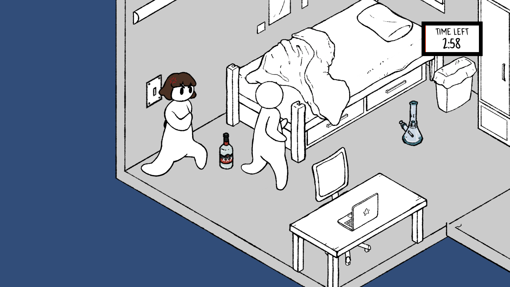

Mom, Please Respect My Privacy
Role(s): Sound Designer, Audio Programmer
|
 |
|
|
Entry to the weekend-long MEGA Newbies and Vets Game Jam 2022 with the given theme constraint: “privacy.” Awarded “Best Overall.” In the game, you play as a college student who must constantly move and hide their scandalous belongings to prevent your mother, who is actively searching for them, from finding them. The player can also turn off a light switch to temporarily distract the mother.
Daniel Yu |
dyu1112 | dyu1112 | danielyu742@outlook.com |